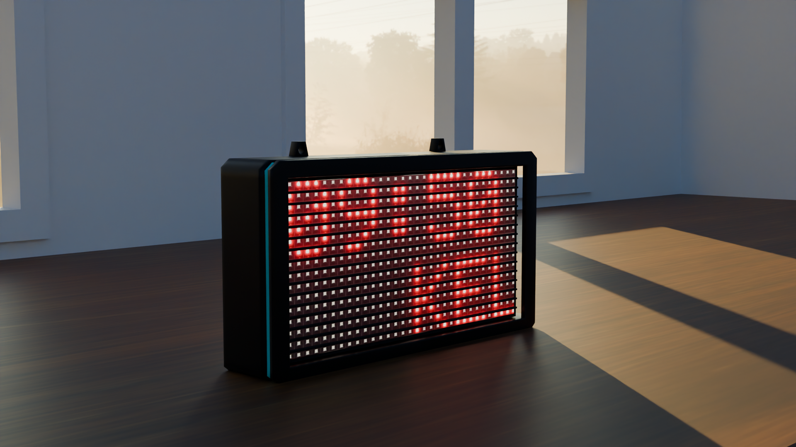

Casing Kustom / IoT
01 // CASING HARDWARE 3D
Detail →
Jam Digital IoT Running-Text
Casing 3D kustom di Blender dengan dudukan modul display LED running text, dudukan komponen internal, dan topologi rapi.